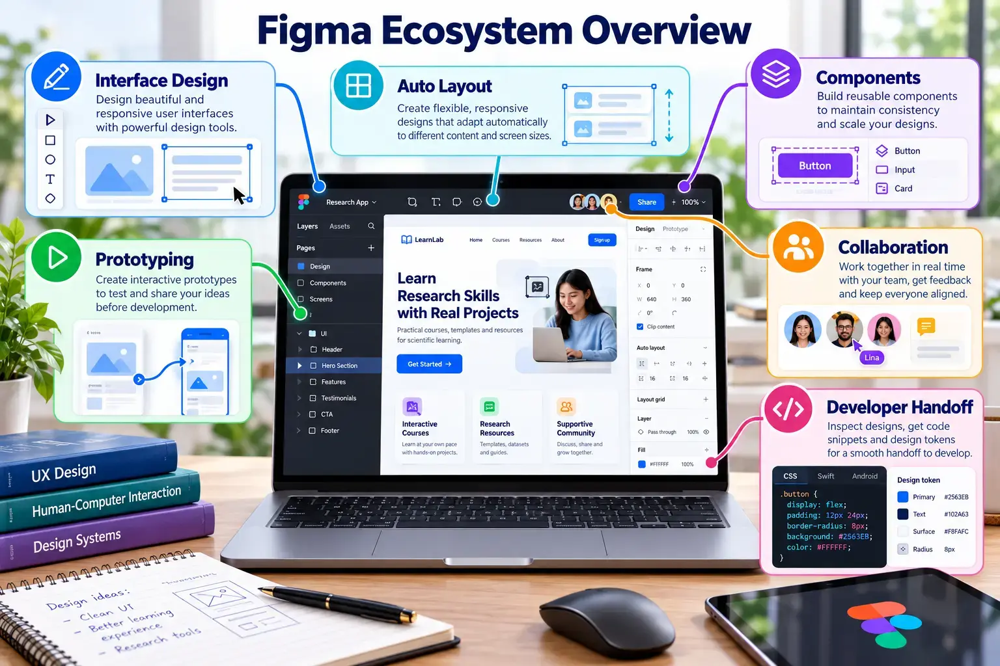
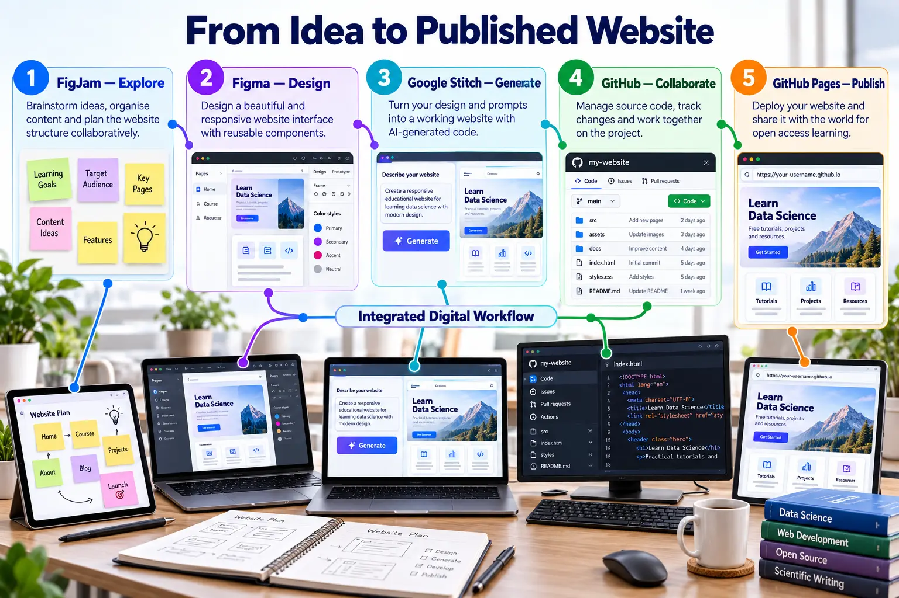

Design before you build
Figma is a collaborative browser-based platform for creating interfaces, components and prototypes.

Sign in and create a file
Open Figma
Visit figma.com and select Log in or Get started.
Authenticate
Use an available sign-in method and complete account verification. Use an account you can retain throughout the semester.
Create a design file
From the file browser, create a new design file and name it SCST1133 Data Pipeline Dashboard.
Design challenge
Create a desktop dashboard containing:
- Total data sources
- Active and failed pipelines
- Processed records
- A pipeline status chart
- Recent activities
- A clear navigation area
Features to practise
| Feature | Use |
|---|---|
| Frame | Define the screen or device canvas. |
| Auto Layout | Arrange responsive groups of interface elements. |
| Component | Create reusable cards, buttons and navigation items. |
| Prototype | Connect screens and demonstrate interaction. |
Share your design
Set access
Select Share and choose an appropriate view permission.
Copy and test the link
Copy the file or prototype URL and test it in a private browser window.
Add it to README
## Figma Prototype [View my Figma prototype](PASTE-FIGMA-URL-HERE)
Expected output
- A complete dashboard frame.
- At least one reusable component and one prototype interaction.
- A tested view-only URL in README.
From wireframe to prototype
Figma quality checklist
- Frames use consistent spacing and alignment.
- Repeated interface elements use components and instances.
- Auto Layout responds when text or card size changes.
- Text contrast, font size and labels remain readable.
- The prototype demonstrates at least one meaningful user task.
- The sharing link works in a private browser window.

Figma learning pathway
Continue through five focused lessons that connect interface design principles with practical evidence for your Topic 2 project.